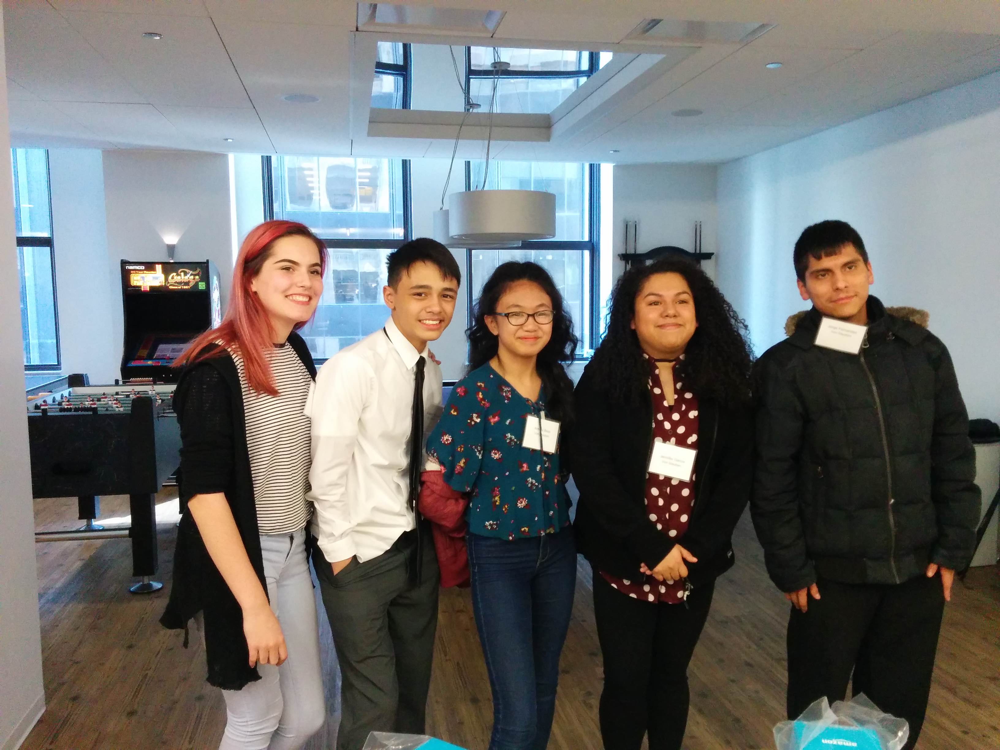
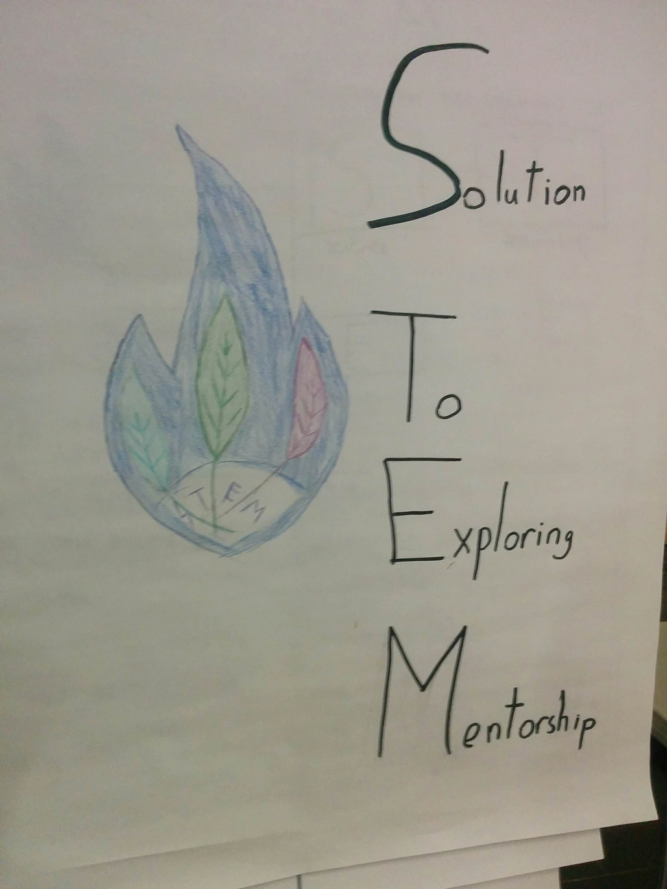

Who is westwardfishdme? The handsome guy pictured above is me. I go by many names: Westwardfishdme, "Finch", but my real name is Jonathan Villanueva. At the time of (re)writing, I am 23 years old and have been working with computers since I was about 12 years old.
At the time of (re)writing this, I have had about 11 years experience with both Windows, and the GNU/Linux operating system, had worked on numerous programming projects, and participated in 2 CTF events. My favorite past-times include:
A little bit more about my time with computers: Since I was a kid, I had always loved disassembling, and reassembling both electronics and toys. The first thing I remember disassembling was my grandparent's old landline telephone to see what it's insides were like. Being a kid, I had nearly zero understanding of what exactly was going on, but I knew from then on I wanted to learn how these electronics worked, and to learn how to build my own stuff.
I first started messing around with computers in about 2011, when my dad brought home this old Office Desktop he scavenged from the bank he worked at. It was quite common for him to give me these as gifts. My parents were split, so I only really saw him every other weekend as a kid. But every time I saw him, he always had brought me something to tinker with while I spent my time with him. However, it wasn't until 2018 when I first built my own custom PC— which I still use to this very day.
Around this time, the hacker groups were taking up headlines left and right. Growing up in an information household, I still remember hearing about their exploits through the news all the time. It seemed as if every other month there was a headline about groups like Anonymous, Lizard Squad, or some random hacker gang getting access to critical information, breaching some megacompany's security, or even just *DDoSing servers.
*(Distributed Denial of Service Attack)
At the time, I started to submerge myself into "hacker" culture. I started to learn about things like Operating Systems; Computer Programming; Computer Networking; Social-Engineering; Password/Hash Cracking; Ciphers+Encryption; Penetration Testing; The whole she-bang. As a kid, all of this stuff was truly fascinating, and everything was just coming to me and I understood it. I had found my passion.
My first ever hack was when I was 13, and it was hacking into my aunt's netflix account. At the time, someone had breached into her account and started using it to watch shows. I had access to her Netflix account, so she was under the assumption that I had something to do with her account getting breached, which I hadn't. So to get access to her account again, I had cloned the netflix login page using SEToolkit (Social Engineering Toolkit) and had her login to my fake page. The fake page then given me her password in plaintext, and I then would use this to login to the account. In my hubris, I had told my dad about my exploits and he quickly notified my aunt about me getting her password again, and I had lost all access within the span of 40 minutes.
Hacking of course bled into my school time as well. I was learning how to bypass my school's filters, I was learning about and mapping my school's network, and using my newfound knowledge to my advantage. My greatest hacking achievement of this time was finding a vulnerability in our school's learning management platform Edmodo that allowed me to see which answers in our homework were correct. I did this by viewing the source of the webpage, and searching the embedded Javascript to see which radio button returned a "True" value to its homework question function. Sometime in 2012-2013, they patched it to show only base64 encoded strings, which literally just added one more step of decoding the base64 value on some online decoder (even as a kid, I knew that security through obscurity never really worked).
It was also around this time, I had also started to teach kids at my school about Computers. I hosted a computer club with my school librarian, and here— I was teaching not only kids, but my school's librarian about computer networking, how computers worked, etc.
My middle school years were the golden years of my hacking career, I had learned most of the basics by the time I was 13.
Once I had entered highschool, my IT career somewhat continued flourishing. I got pulled out of my school's regular Honor's computer classes in place for working in their student IT team. Here, I learned how to setup ethernet cables, printers, servers, and troubleshoot common issues with the school's computers. I also was in charge of setting up and directing official school livestreams using OBS and Blackmagic audio/light controls. I even got to tour Google's Chicago HQ in Fulton Market in early 2017.
Me and the group had won the App Design Challenge
App logo that we designed as well as the name of the project.
However, due to my poor performance in my other classes, I unfortunately was kicked out of the program and unable to really recover my position as part of our student tech crew. This devastated me. I had spent most of my time working with the school's IT team, and was extremely happy to do so. It was here where I felt like I had purpose, and belonging, and that was taken away from me because I was failing English and World History.
I still excelled in my computer classes, I was taking game design classes and it was here that I would still tutor my classmates on learning Python and help debug their programs. Yet that urge to continue working with computers was growing. Then COVID hit, and I had all the time in the world.
When COVID-19 hit the US, we were told that we would be back within a week. Little did they know that it would last 2 years. While I did spend a ton of time gaming— I was in a bind with my home situation. My mom was a nurse in the hospital during this time, and she was almost always coming home devastated from the rampage of COVID. It was during this time that I had lost my closest friend, and my great-aunt who had inspired me as a kid to pursue my dreams of computer security. I was devastated. Setback after setback, it honestly felt like my life was being controlled by a double-jointed pendulum, swinging back and forth with no direction, and at some point in that whole mess, I graduated high school, and went to college.
Initially, I was really ecstatic to go to college. I had been granted the Star Scholarship award by the City Colleges of Chicago in order to pursue higher education at Wilbur Wright college. However after my first semester, I had left— only to comeback every other semester to try and finish my Associate's degree, of which was completed back in May 2025. In my spare time, I had been focusing on obtaining certfications, getting more hands-on experience for offensive hacking, and building numerous projects in order to push towards my career goals.

As of 2025, I was accepted into Loyola University to study Cybersecurity-- of which I had joined the 7968 cybersecurity club, and currently have participated in the 2025 National Cyber League where I ranked #578 out of 7876 total participants (Top 93rd percentile), and in the Cyberforce 2025 competition with my 6 teammates, which you can see a picture of me participating in above.